Tous les tests d'accueil et de style pour les 26 graphistes. Partout, le clavier marche : une lettre choisit un graphiste, la même lettre ou Entrée ouvre son dossier, Échap revient.
Sur les intercalaires, le bouton « Réglages » en bas à droite change la peau, la typo, l'agencement, l'ouverture et le titre. « Copier les réglages » te donne un texte à me coller.
La piste principale. Huit points de départ ; chacun se modifie ensuite avec le panneau de réglages.
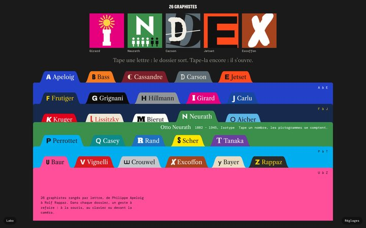
Classeur noirLe plus proche de la référence : fond sombre, onglets saturés, lettre et nom sur l'onglet.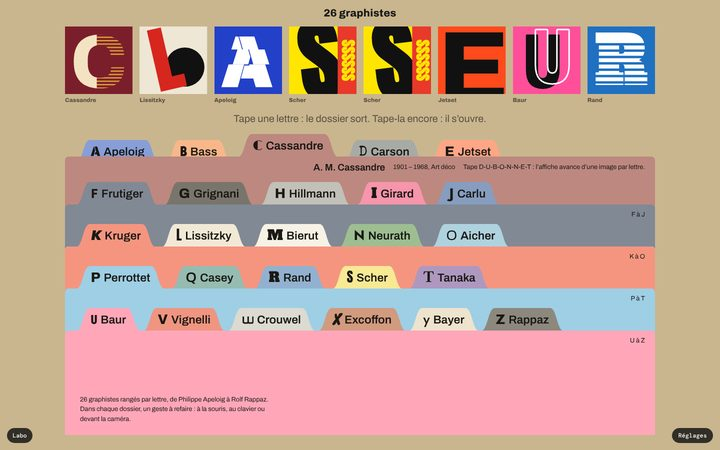
CartonBureau kraft, intercalaires en bristol pastel, tout en grotesque.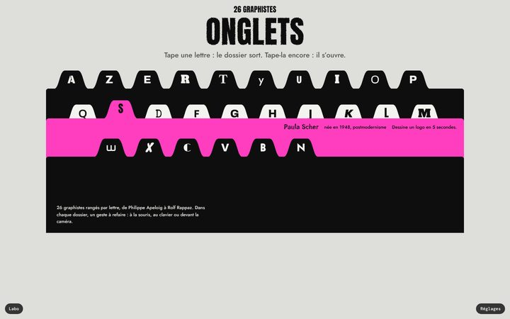
Imprimé, clavier AZERTYNoir, blanc et un rose : les onglets sont les touches du clavier, sur trois rangées.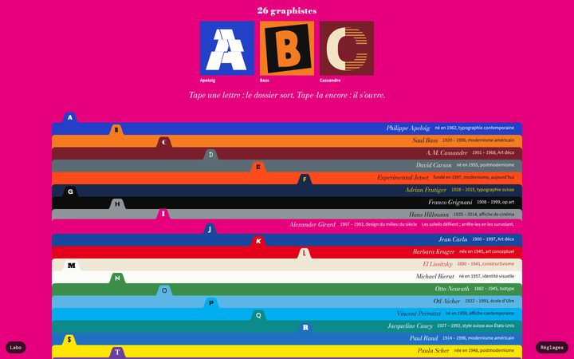
Aplats, pile de 26Une bande par lettre, le nom à droite. La page prend la couleur du dossier sorti.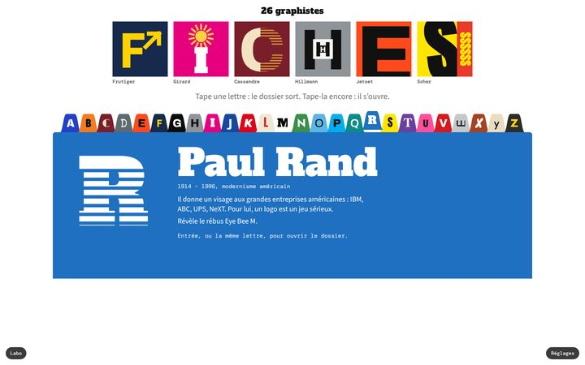
Blanc, répertoireLes 26 onglets sur une seule rangée, et une grande fiche qui change dessous.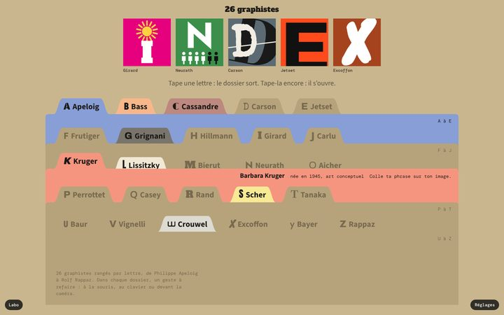
Lettres vides en carton viergePour voir à quoi ressemble le classeur quand 8 ateliers seulement sont construits.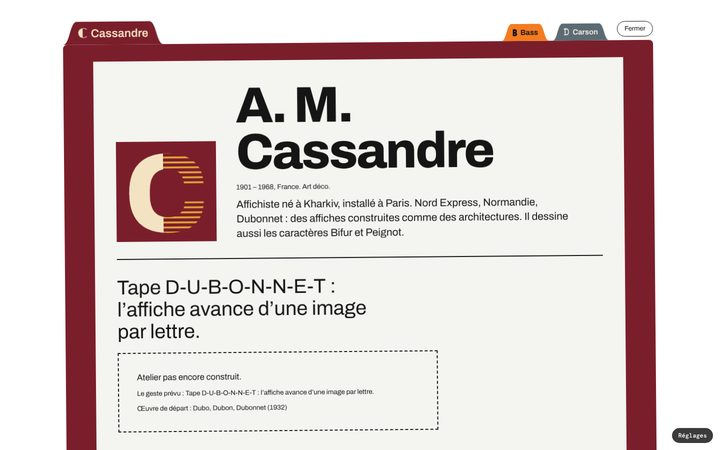
Lettre seule, le dossier basculeOnglets de même largeur, et l'ouverture où le dossier arrive en biais.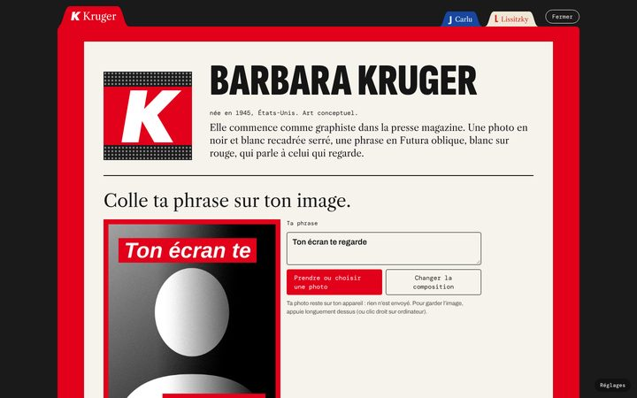
Un dossier ouvert : KrugerLa page intérieure, la même pour les 26. Ici avec le seul atelier qui marche déjà.Tirés de tes références, sans intercalaires. Dans chacun, ouvrir un graphiste mène au même dossier.
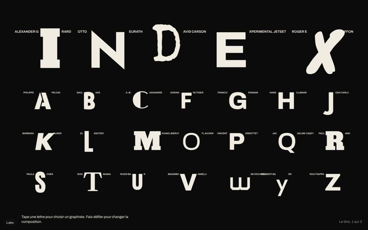
B. Les initialesLe titre s'écrit avec les initiales, chaque nom accroché à sa lettre. Fais défiler : la page se recompose trois fois.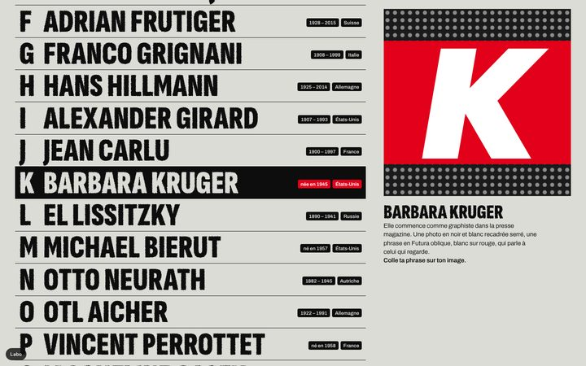
C. La liste impriméeUne ligne par graphiste en condensée géante, bords rugueux, une seule image en couleur.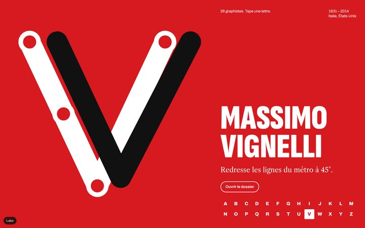
D. Une touche, une afficheChaque lettre remplit l'écran dans la couleur de son artiste. Le plus direct pour le clavier.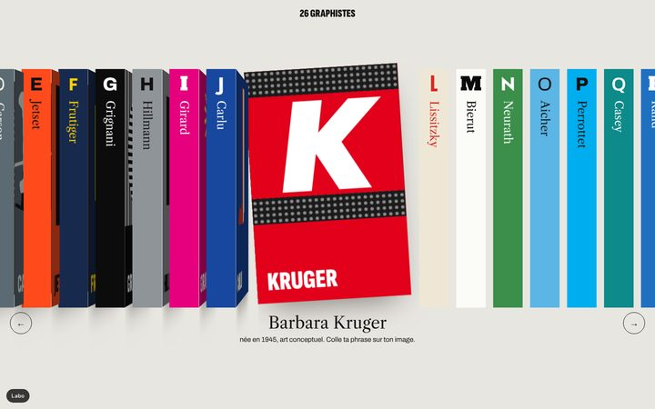
E. L'étagère26 tranches côte à côte ; celle qu'on choisit sort et se tourne pour montrer sa couverture.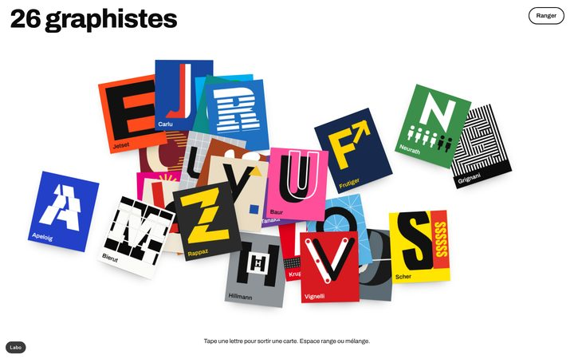
F. Le pêle-mêleDes cartes en vrac sur une table blanche, qui se rangent en alphabet.Ce qui sert à décider : les lettres, le titre, la caméra.
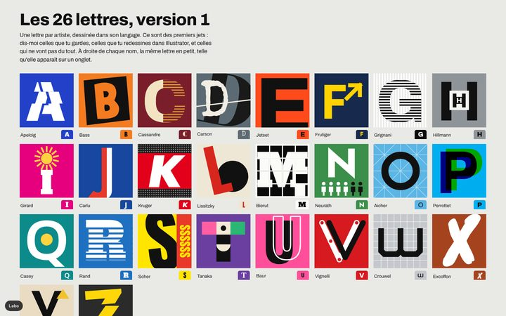
Les 26 lettres, version 1Une lettre par artiste, dessinée dans son langage. À garder, à redessiner ou à jeter.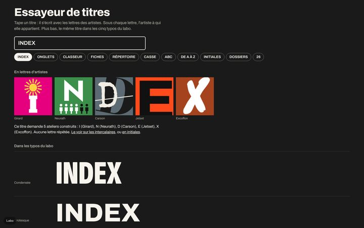
Essayeur de titresTape un titre : il s'écrit en lettres d'artistes, puis dans les cinq typos.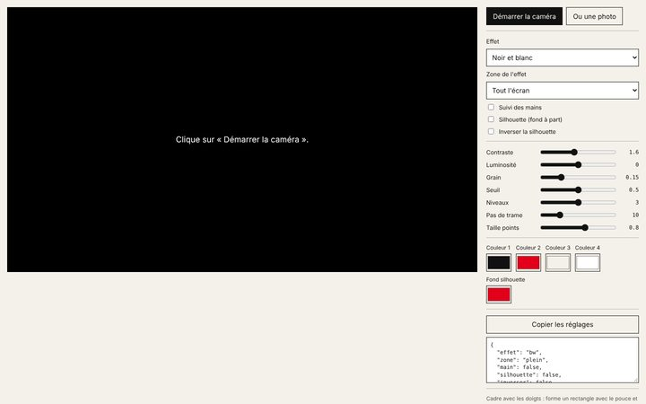
Page caméraEffets en direct, cadre aux doigts, panneau de réglages (test d'hier).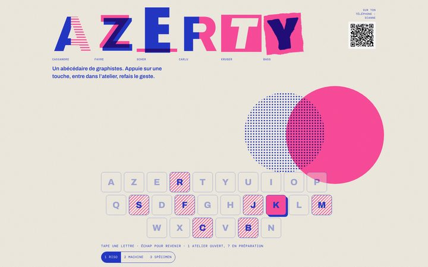
Le site v1 : le clavierL'accueil d'avant, avec ses trois directions refusées. Pour comparer.Tout est provisoire : la liste des 26 vient de la proposition du 12 novembre, les couleurs et les lettres sont des premiers jets, les textes sont à relire. Un seul atelier fonctionne vraiment, celui de Barbara Kruger ; les autres dossiers montrent le geste prévu.